Most spa bathroom galleries show the finished hotel version and leave out what it actually takes to get there.
Some of these 20 features cost twenty dollars and an afternoon. Others mean opening up a wall.
Knowing which is which before falling in love with a photo saves real disappointment later.
Here they are, sorted by how achievable they actually are for a typical home.
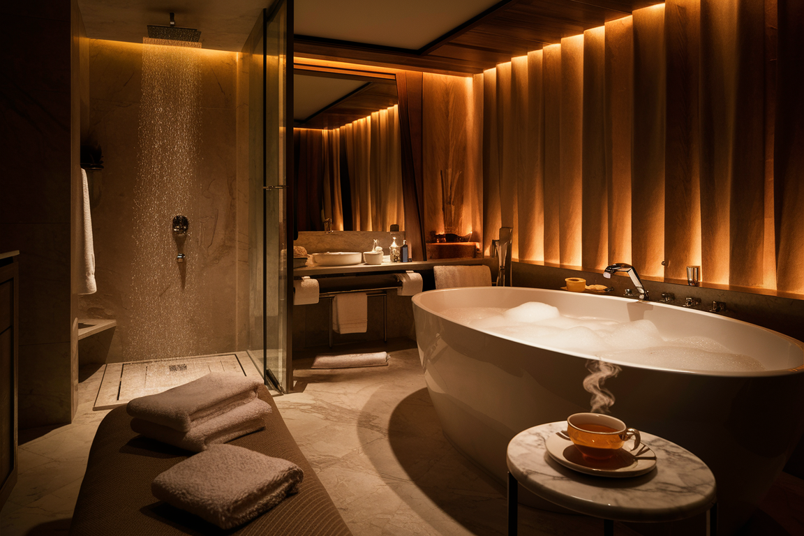
Worth Saving Up For
These need a contractor, real plumbing or electrical work, and a genuine budget, but they're also the features that change how the bathroom functions, not just how it looks.
1. A Steam Shower
A steam shower needs a sealed enclosure and a dedicated steam generator, making it one of the biggest investments on this entire list.
This is a genuine renovation project, not an upgrade to an existing shower.
It delivers a spa experience that's hard to replicate with anything else on this list.
Worth it only for someone planning a full bathroom renovation and genuinely wants this specific feature.
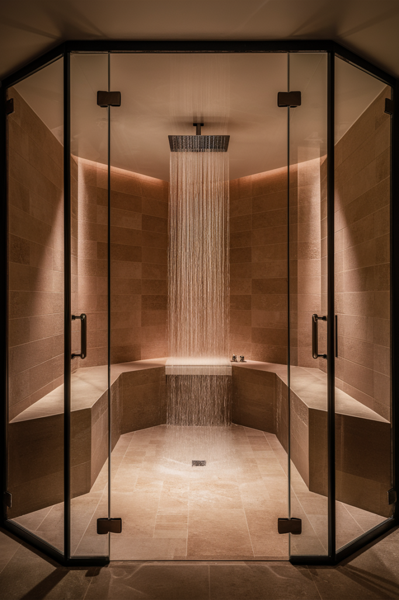
2. A Japanese-Inspired Soaking Tub
A deep, compact soaking tub takes up less floor space than a standard freestanding tub while still allowing full-body immersion.
This still requires real plumbing and structural planning, similar to any built-in tub.
It suits a smaller bathroom that wants a soaking tub without a bigger footprint.
A genuine splurge, but one that solves the space problem a standard tub can't.
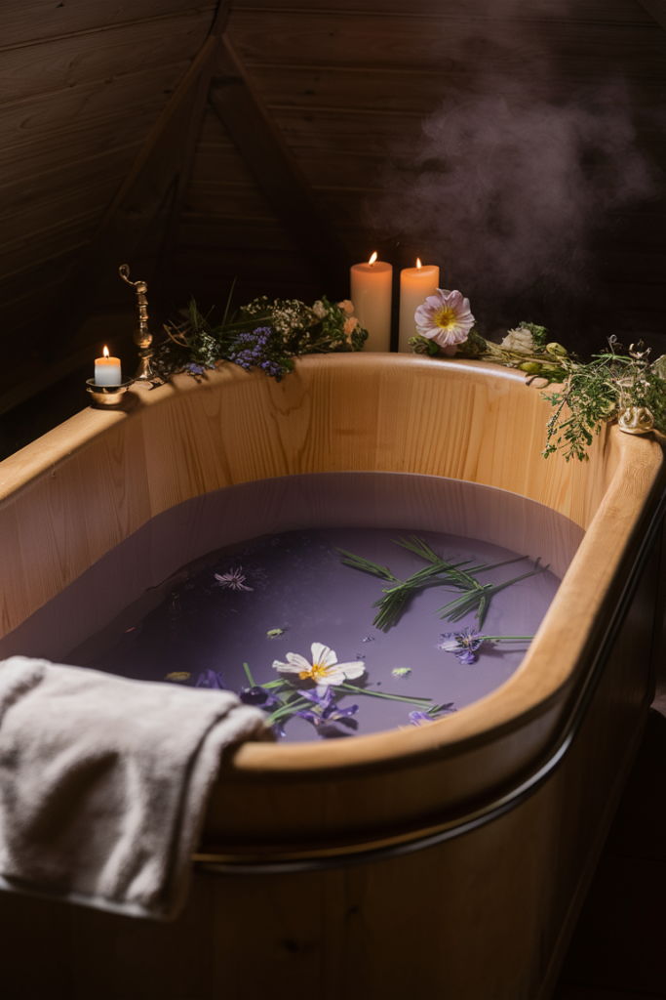
3. Built-In Shower Benches
A built-in bench requires opening up the shower structure, so it's best planned alongside a full shower renovation.
This adds genuine function, a spot to sit, shave, or just slow down under the water.
Not a standalone weekend project by any measure.
Worth prioritizing for anyone already gutting the shower for other reasons.
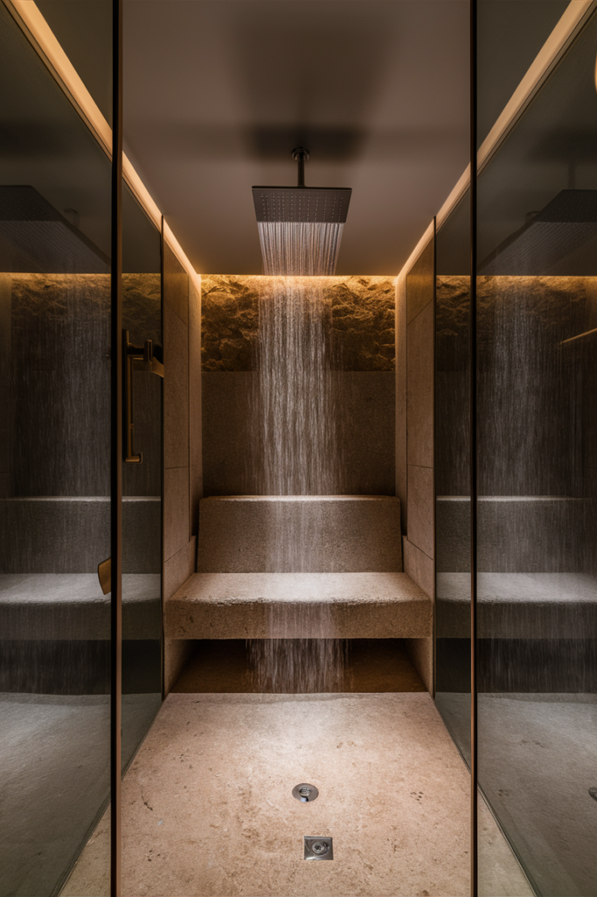
4. A Waterfall Faucet
A waterfall faucet adds a distinctive visual and sound element to a vanity or tub filler.
Installation complexity depends on the existing plumbing configuration.
This is a smaller splurge than a full tub or shower renovation, but still more than a simple fixture swap.
A nice detail for anyone already updating the vanity or tub area.
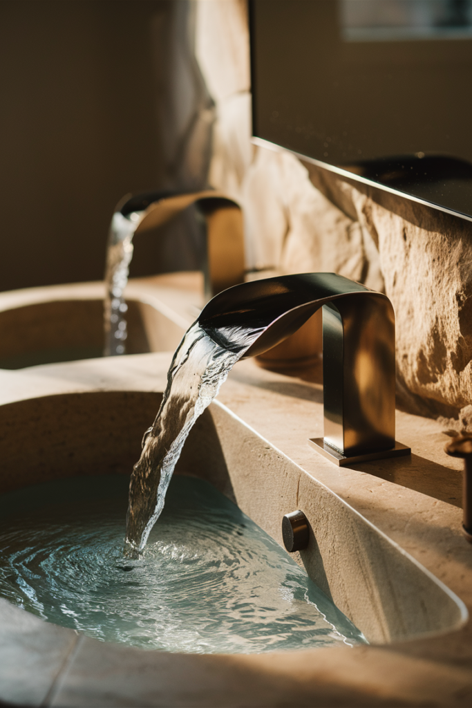
5. An Elegant Floating Vanity
A floating vanity needs wall-mounted plumbing, which is more involved than a standard vanity swap.
It opens up the floor and makes a smaller bathroom feel noticeably larger.
This is a mid-to-high cost project depending on the plumbing work required.
Worth prioritizing in a smaller bathroom where floor space matters most.
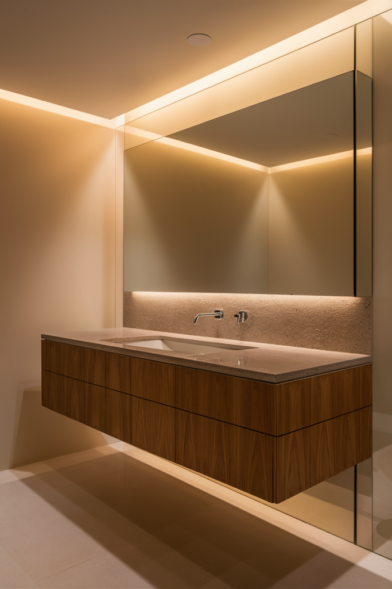
6. Heated Floors
Heated floors require installation underneath existing flooring, which usually means a renovation rather than an add-on.
This is a genuine comfort upgrade, especially in a colder climate.
It's best planned alongside a flooring replacement already in progress, rather than as a standalone project.
One of the purely functional splurges on this list, it doesn't change the look at all.
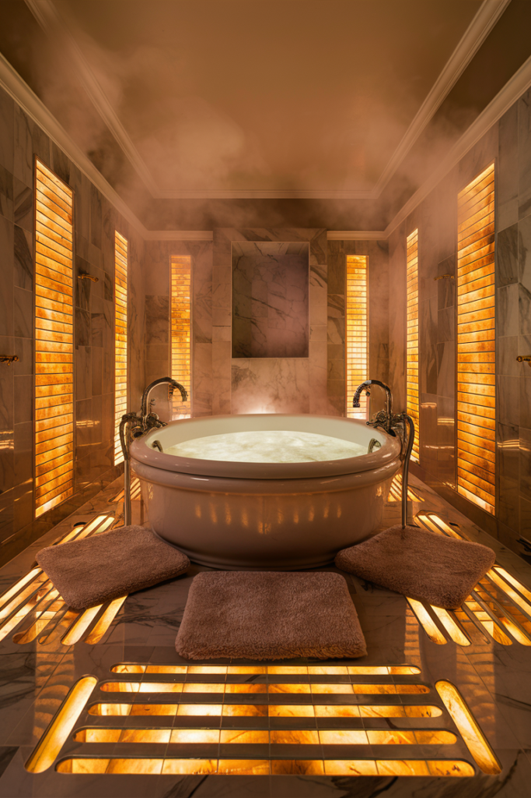
7. Natural Stone and Wood Elements
Incorporating real stone and wood throughout, not just accents, is a bigger material and labor investment than a quick swap.
These materials need occasional sealing and maintenance to hold up over time.
This suits anyone planning to stay in the home long enough to get the value back.
It transforms more of the room than any single accessory could.
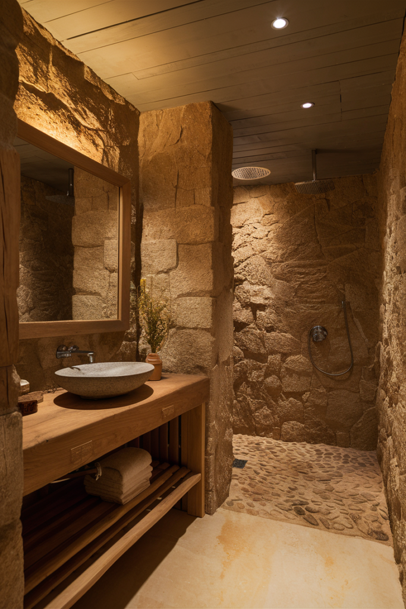
8. A Rainfall Showerhead
A rainfall showerhead changes the entire daily shower experience, not just the room's look.
Installation ranges from a simple swap to a bigger plumbing job depending on the existing setup.
This is one of the more affordable splurges on this list relative to its daily impact.
A genuinely functional upgrade, not just a styling one.
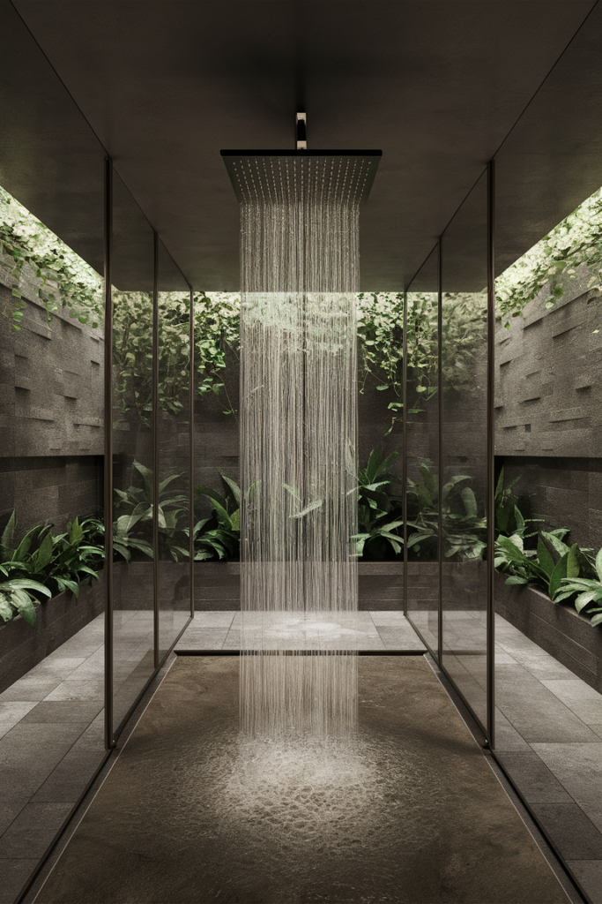
9. A Freestanding Soaking Tub
A freestanding tub is one of the clearest visual signals of a spa-style bathroom.
It needs real plumbing planning and floor space most smaller bathrooms don't have.
This is a genuine investment, both financially and in the renovation itself.
Worth it for anyone who actually soaks regularly, less so for anyone who mainly showers.
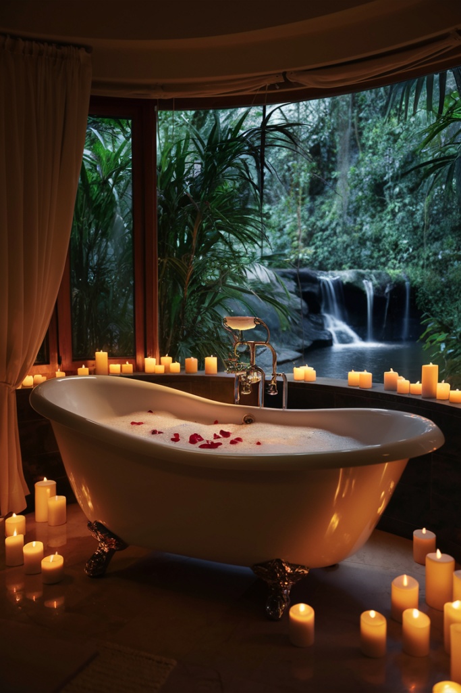
Worth Doing With a Bit of Planning
These take more than a weekend, and usually a small budget, but they don't require ripping out walls.
10. Elegant Marble Accents
A marble tray, a small marble shelf, or marble-topped accessories add a sense of luxury without full marble tiling.
This is a far smaller investment than marble countertops or flooring.
It's a reasonable middle ground for anyone who wants the material without the renovation.
A little marble goes a surprisingly long way visually.
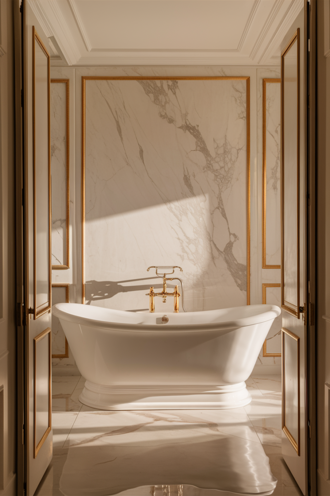
11. A Minimalist, Clutter-Free Reset
This is often more about removing than adding.
Editing down to what's actually used daily, and finding closed storage for the rest, costs very little.
It's one of the few changes on this list that can genuinely be free.
A calm, uncluttered room is the foundation everything else on this list builds on.
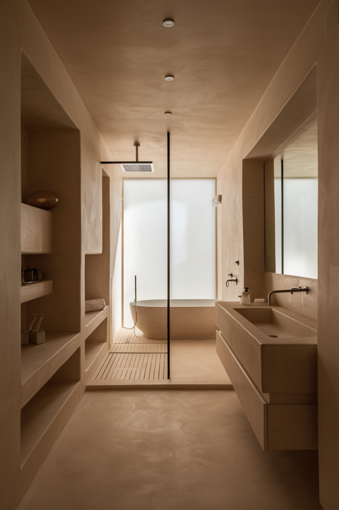
12. Stylish, Functional Storage
Swapping cluttered open storage for a closed cabinet or styled baskets takes real planning but not necessarily construction.
This is more about editing and reorganizing than buying something entirely new.
A clutter-free surface does as much for the "spa" feeling as any single purchase.
Worth tackling before adding any of the more decorative items on this list.
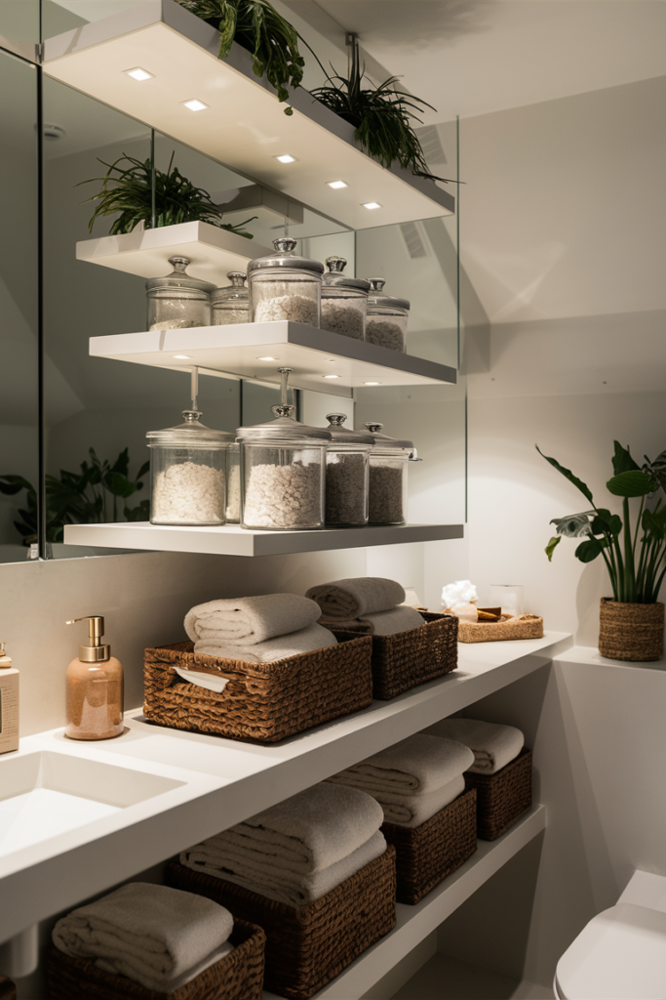
13. A Relaxing Seating Area
A small bench or chair in a larger bathroom adds a spot to actually slow down.
This needs the floor space to spare, which isn't realistic in every layout.
It's more of a furniture purchase than a renovation, so cost stays relatively contained.
This suits a primary bathroom more than a shared or powder room setup.
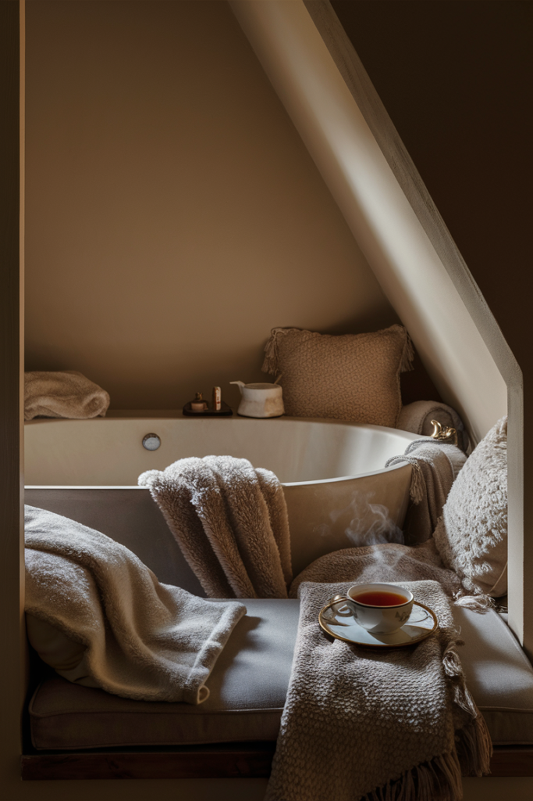
Easy to Add This Weekend
These cost little and need no renovation at all.
14. A Soft, Neutral Palette
Swapping out colorful towels, bath mats, and small accessories for a calm neutral palette changes the room's whole mood.
This can be done gradually, item by item, without a big upfront cost.
It's less about any single purchase and more about consistency across everything visible.
A calm palette is the backdrop most of the other ideas on this list actually need to work.
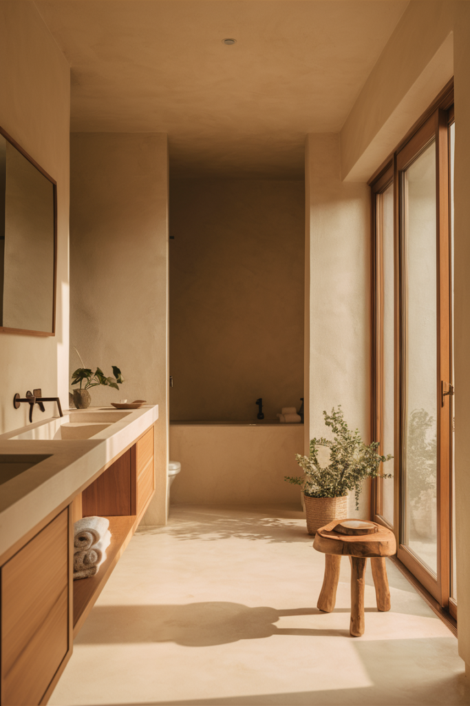
15. Soundscapes
A small waterproof speaker playing rain sounds or quiet music adds an entirely new sensory layer.
This costs very little and needs no permanent installation.
It's an easy way to make a daily routine feel more like an actual ritual.
One of the more overlooked additions on this list, given how little it costs.
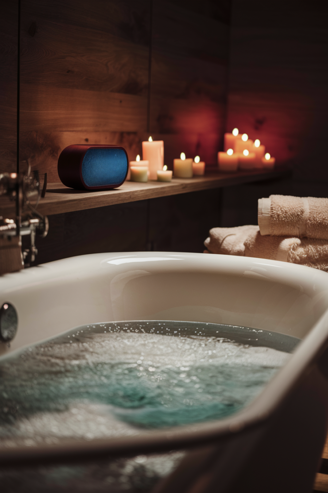
16. Decorative Mirrors
A mirror with real presence, an interesting frame, an oversized scale, bounces light and adds style at once.
Most standard mirror sizes swap in without any real installation hassle.
This is a straightforward upgrade that pairs well with almost any other change on this list.
A good mirror does double duty as both function and decor.
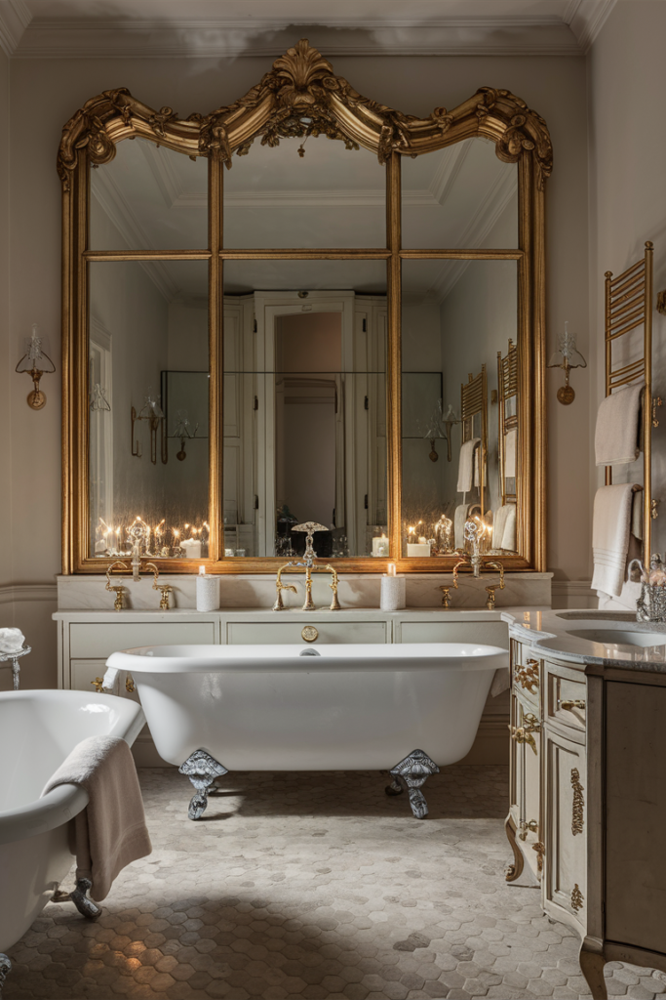
17. Soft, Ambient Lighting
Swapping a harsh overhead bulb for a warmer one, or adding a plug-in lamp, changes the whole mood instantly.
A dimmer switch is a bit more involved but still a relatively quick electrical job.
This is one of the cheapest upgrades with the most noticeable payoff.
Warm light flatters both the room and whoever's using it.
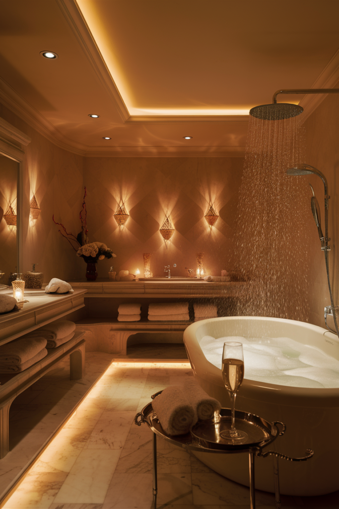
18. Indoor Plants
A few humidity-tolerant plants bring life into a bathroom for very little money.
This requires no tools and takes minutes to set up.
It's one of the easiest ways to soften a bathroom that otherwise feels clinical.
Low-maintenance varieties handle a bathroom's humidity swings without much fuss.
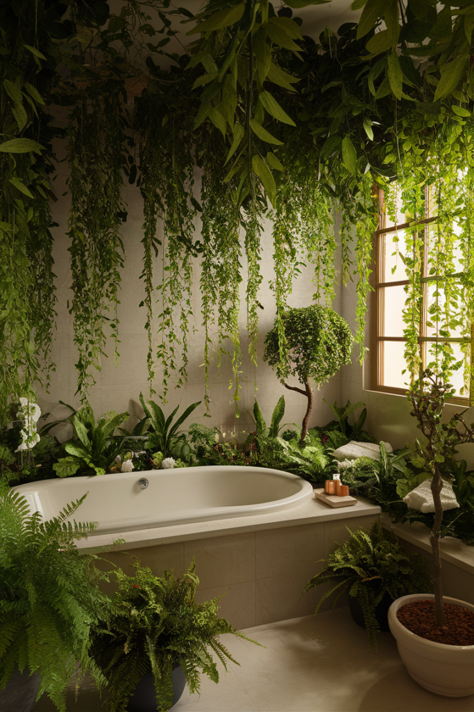
19. Aromatherapy and Essential Oils
A diffuser or a few scented candles change how a bathroom feels within minutes.
Lavender and eucalyptus both read as classic spa scents without being overpowering.
This is one of the cheapest items on the whole list and needs no installation whatsoever.
Scent does more for atmosphere than most people give it credit for.
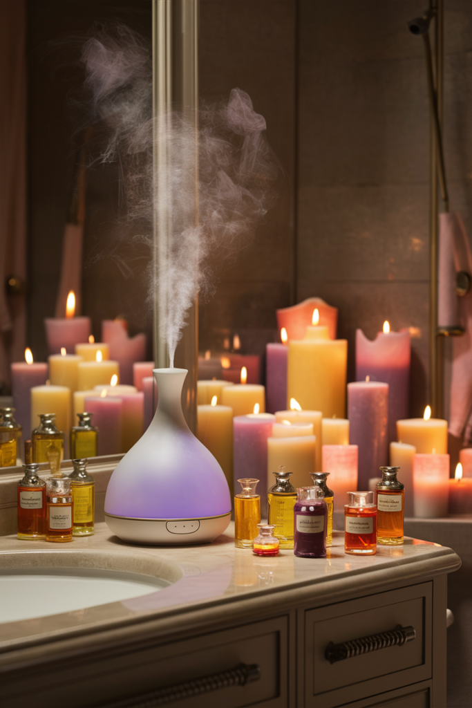
20. Luxurious Towels and Robes
Swapping thin towels for thick, matching ones is the fastest, cheapest way to make a bathroom feel like a hotel.
A robe on a hook adds the same effect for very little extra cost.
This requires zero installation and can be done the day it arrives.
It's consistently the highest-impact, lowest-effort change on this entire list.
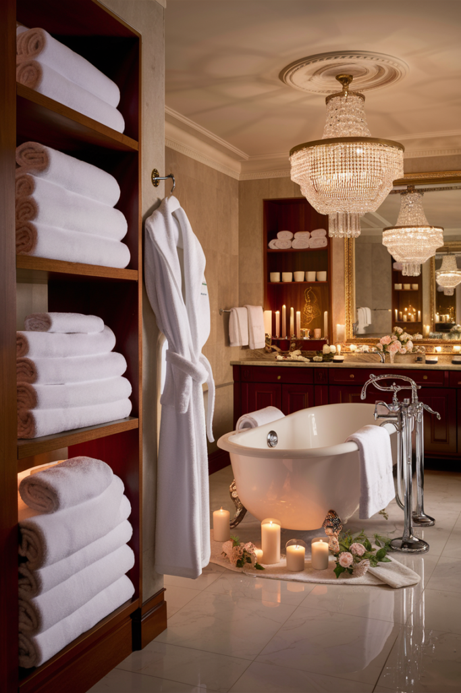
Final Thoughts
A spa bathroom doesn't have to mean the full hotel-renovation version shown in most photo galleries.
Start with the easy, cheap changes, towels, scent, lighting, plants, before committing to anything requiring a contractor.
The cheap changes often deliver more noticeable day-to-day impact than the expensive ones anyway.
Save the real splurges for whenever a full renovation is already on the table, not for a random Tuesday when a hotel photo gets a little too convincing.